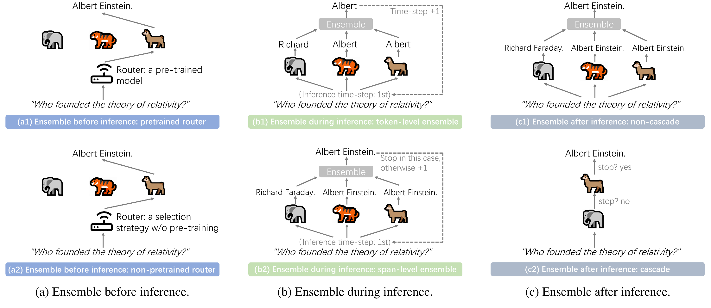

Abstract
LLM Ensemble—which involves the comprehensive use of multiple large language models (LLMs), each aimed at handling user queries during downstream inference, to benefit from their individual strengths—has gained substantial attention recently. The widespread availability of LLMs, coupled with their varying strengths and out-of-the-box usability, has profoundly advanced the field of LLM Ensemble. This paper presents the first systematic review of recent developments in LLM Ensemble. First, we introduce our taxonomy of LLM Ensemble and discuss several related research problems. Then, we provide a more in-depth classification of the methods under the broad categories of “ensemble-before-inference, ensemble-during-inference, ensemble-after-inference,” and review all relevant methods. Finally, we introduce related benchmarks and applications, summarize existing studies, and suggest several future research directions.
Introduction
In recent years, the landscape of artificial intelligence has been dramatically reshaped by the development of Large Language Models (LLMs), including Gemini, GPT-4, Llama, and the recently introduced DeepSeek. The success of these LLMs continues to fuel widespread research enthusiasm, with a remarkable total of over 182,000 large language models now accessible in the Hugging Face library.
Behind this research enthusiasm, however, we can identify two main aspects: 1) The performance concerns: The direct out-of-the-box capability of LLMs (from zero-shot inference) and their indirect out-of-the-box capability (from in-context-learning few-shot inference) still raise performance worries, including accuracy, hallucinations, and misalignment with human intent, among others; 2) The varying strengths and weaknesses of LLMs, each with different inference costs: Due to differences in architecture, parameter size, tokenization, dictionary, training data, and methodology, these LLMs exhibit substantial variability and their responses can differ significantly. With the above two aspects in mind and drawing on the spirit of Ensemble Learning, it is natural to consider that, for each task query, rather than persistently relying on a single LLM based on public rankings or other criteria, it might be more advantageous to simultaneously consider multiple LLM candidates (usable out-of-the-box) and harness their distinct strengths. This is exactly what the recently emerging field of LLM Ensemble explores.
Existing LLM Ensemble methods can be broadly categorized into three types, depending on the sequence of LLM inference and ensemble: 1) Ensemble-before-inference approach, utilizes the given query information while considering the diverse characteristics of all LLM candidates to route an appropriate model for inference (this approach is similar to the hard voting strategy in Ensemble Learning); 2) Ensemble-during-inference approach, aggregates incomplete responses (e.g., token-level information) from multiple LLMs during the decoding process and feeds the combined result back into all the models; 3) Ensemble-after-inference approach, performs the ensemble after full responses (instead of fragments) have been generated by all models or a subset of them.
Despite the emergence of numerous methods derived from these broad paradigms recently, there is still no formal survey that offers a comprehensive review of the core ideas and related research in the rapidly evolving field of LLM Ensemble. We present the first comprehensive survey on LLM Ensemble, introducing recent advances and focusing on taxonomy, related problems, methods, benchmarks, applications, and future directions. We hope that this survey will provide a thorough review for researchers and inspire further exploration.
LLM Ensemble Taxonomy

Figure 1: Illustration of the LLM Ensemble taxonomy. (Note that for (b) ensemble-during-inference, there is also a (b3) process-level ensemble approach not depicted in the figure, due to layout considerations and the status that this approach is instantiated by a single method.)
(a) Ensemble Before Inference
This approach employs a routing algorithm prior to LLM inference to allocate a specific query to the most suitable model, allowing the selected model that is specialized for the query and typically more cost-efficient inference to perform the task. As illustrated in Figure 1, existing methods can be classified into two categories, depending on whether the router necessitates the use of pre-customized data for pre-training:
(a1) pretrained router;
(a2) non-pretrained router.
(b) Ensemble During Inference
As the most granular form of ensemble among the three broad categories, this type of approach encompasses:
(b1) token-level ensemble methods, integrate the token-level outputs of multiple models at the finest granularity of decoding;
(b2) span-level ensemble methods, perform ensemble at the level of a sequence fragment (e.g., a span of four words);
(b3) process-level ensemble methods, select the optimal reasoning process step-by�step within the reasoning chain for a given complex reasoning task. Note that for these ensemble-during-inference methods, the aggregated text segments will be concatenated with the preceding text and fed back into the models.
(c) Ensemble After Inference
These methods can be classified into two categories:
(c1) Non-cascade methods, which perform ensemble by integrating multiple complete responses contributed from all LLM candidates;
(c2) Cascade methods, which consider both performance and inference costs, progressively performing inference through a chain of LLM candidates ranked primarily by model size to identify the most suitable response and terminate the cascade process.